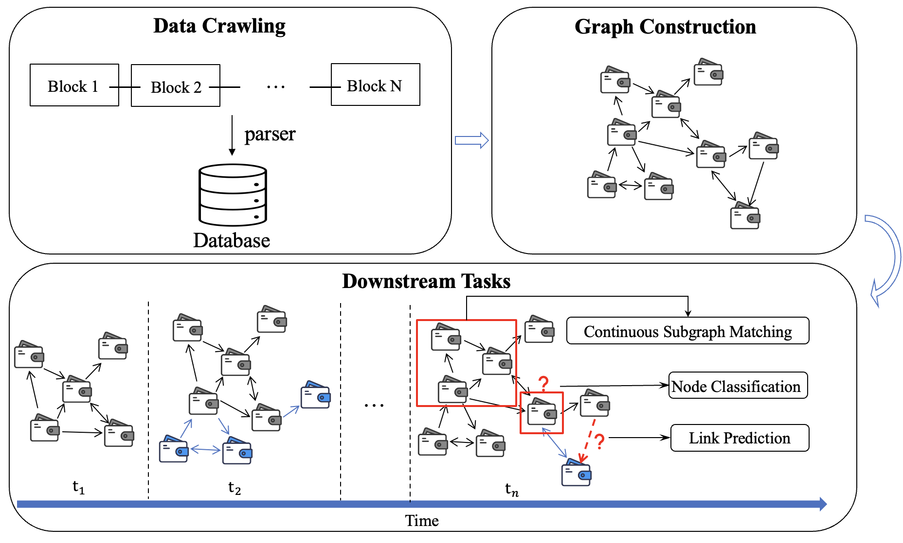

Live Graph Lab: Towards Open, Dynamic and Real Transaction Graphs with NFT
Temporal graphs provide a more accurate representation of real-world systems like social networks, citation networks and the Web. By studying temporal graphs, we can gain insights into the temporal dynamics and understand how these systems evolve and function.
In the current literature, studies are usually conducted on a set of outdated and incomplete graphs. The majority of the aforementioned graphs are either not publicly available or their graph structures are incomplete since they cannot record all the interactions in graph. Moreover, even through all the interactions are recorded, they may not be able to be shared in a public and timely evolving manner, such as social networks in companies like Meta and Tencent. Thus, for meaningful temporal graph analysis and benchmarks, we need some graph datasets that are openly available, dynamically evolving and encompass real interactions.
In this paper, we introduce the concept of Live Graph Lab for temporal graphs, which enables open, dynamic and real transaction graphs from blockchains. To enrich the current datasets and overcome their limitations, we instantiate a live graph with NFT transaction network by synchronizing a full Ethereum node, thus it continuously keeps up with the latest Ethereum block and includes all the transaction data.
In addition, we present a temporal graph extracted from a specific time period spanning from 2017 to 2022, which comprises over 4.5 million nodes and 124 million edges. Then, comprehensive analyses are performed, and the results demonstrate that our presented live graph exhibits a variety of characteristics, offering exciting opportunities for the graph community. We now offer access to the datasets through both the following Google Drive and Zenodo links.
Codes » Metadata » Link Prediction Data » Node Classification Data » CSM Data » Zenodo Backup»Overview
Metadata
We extract all the blocks before Aug 1st, 2022 (i.e., from block #0 to block #15,255,104). Then, we parse all the transaction data and log data via toolkit Ethereum ETL. Through this way, we obtain a network with more than 4.5 million nodes and 124 million edges. The data are stored in a tabular format with the following headers: collection address, block number, from address, to address, token id, transaction hash, value and timestamp. The statistical information is as follows:
| Descriptions | Statistics |
|---|---|
| Start date (mm-dd-yyyy, UTC) | 07-12-2017 13:49 |
| End date (mm-dd-yyyy, UTC) | 08-01-2022 06:50 |
| Number of NFT collections | 97,667 |
| Number of NFT tokens | 77,991,885 |
| Number of account addresses | 4,531,020 |
| Number of transactions | 124,660,813 |
The data format is as follows:
collection address,block number,from address,to address,token id,transaction hash,value,timestamp
"0x55b9...",4012328,"0x51e1...","0x6c9a...","0x9000...","0xb31f...",0.0,1499867867
"0xf4b1...",4254954,"0x7307...","0x3a3f...","0x8000...","0x3409...",0.0,1504953873
...
Visual Examples for Trade Patterns
We provide several visual examples for trade patterns as outlined below. As we can see from the figure and table, some transactions exhibit obvious patterns and structures. After several subsequent transactions, the tokens eventually return to their original holders.
| from address | to address | NFT | tokenid | value | timestamp |
|---|---|---|---|---|---|
| Pattern 1 | |||||
| 0x7440e1407f95f33206fb72464a63cd54b2ee6282 | 0xd39e456c22eabf3ab0e58bdeea269927c65f6263 | Azuki | 1215 | 8.98 | 1652208247 |
| 0xd39e456c22eabf3ab0e58bdeea269927c65f6263 | 0xeaaeac965449d2426f6f793770b4f3560eeb7c0f | Azuki | 1215 | 9.69 | 1652208655 |
| 0xeaaeac965449d2426f6f793770b4f3560eeb7c0f | 0x7440e1407f95f33206fb72464a63cd54b2ee6282 | Azuki | 1215 | 11.99 | 1652210005 |
| ... | ... | ... | ... | ... | ... |
| Pattern 2 | |||||
| 0x7ED07e5a6f3F30AeE3E1d8823b8b331C4bA6D093 | 0xcc7cBFb9D98e364A78B9EFDa0Dd83122880b6e42 | OGCR | 9119 | 0.14 | 1634853524 |
| 0xcc7cBFb9D98e364A78B9EFDa0Dd83122880b6e42 | 0x8Bbc266Fe8A93186cea865d062A120805fBb25d2 | OGCR | 9119 | 0.145 | 1634855712 |
| 0x8Bbc266Fe8A93186cea865d062A120805fBb25d2 | 0x54e3AEBCDc3d346fF1e24e9c01fc7184664Ce239 | OGCR | 9119 | 0.15 | 1634857462 |
| 0x54e3AEBCDc3d346fF1e24e9c01fc7184664Ce239 | 0x7ED07e5a6f3F30AeE3E1d8823b8b331C4bA6D093 | OGCR | 9119 | 0.155 | 1634859791 |
| ... | ... | ... | ... | ... | ... |
| Pattern 3 | |||||
| 0xBB22904A513b7E3E39ee3aCd962C430989Add8f1 | 0x24aF5E16C9Fa5a4969499baAa290E679bc120161 | Phunk | 320 | 4 | 1641900784 |
| 0x24aF5E16C9Fa5a4969499baAa290E679bc120161 | 0xBB22904A513b7E3E39ee3aCd962C430989Add8f1 | Phunk | 320 | 6 | 1641900973 |
| 0xBB22904A513b7E3E39ee3aCd962C430989Add8f1 | 0x5d84A71B2648bD0B4f55d0D20Cf99dbd65D64458 | Phunk | 320 | 5.8 | 1641901272 |
| 0x5d84A71B2648bD0B4f55d0D20Cf99dbd65D64458 | 0xBB22904A513b7E3E39ee3aCd962C430989Add8f1 | Phunk | 320 | 6 | 1641901732 |
| ... | ... | ... | ... | ... | ... |
| Pattern 4 | |||||
| 0xcAf39ae584cD9d64b594Db907036D932D15a2a82 | 0x70316254c05eec4870B58Ff0D7267ca03D1b672a | TAs | 6767 | 0.825 | 1658174367 |
| 0x70316254c05eec4870B58Ff0D7267ca03D1b672a | 0xA95558E2C3BA5D4b13568716E1c043C18631Df63 | TAs | 6767 | 0.846 | 1658213566 |
| 0xA95558E2C3BA5D4b13568716E1c043C18631Df63 | 0xcAf39ae584cD9d64b594Db907036D932D15a2a82 | TAs | 6767 | 0.866 | 1658213924 |
| 0xcAf39ae584cD9d64b594Db907036D932D15a2a82 | 0xE616BFB003d67ef3a364f79D10e64F9349d2aE16 | TAs | 6767 | 0.888 | 1658264899 |
| 0xE616BFB003d67ef3a364f79D10e64F9349d2aE16 | 0xcAf39ae584cD9d64b594Db907036D932D15a2a82 | TAs | 6767 | 0.892 | 1658268808 |
| ... | ... | ... | ... | ... | ... |
| Pattern 5 | |||||
| 0xa5c87DC380C263bBA1a3c49d9a7Bf582A56E94db | 0x3A6ee71b12AE5351Feba34dfF1e2fD27cD32a95d | N | 4440 | 1.0872 | 1633897537 |
| 0x3A6ee71b12AE5351Feba34dfF1e2fD27cD32a95d | 0xa5c87DC380C263bBA1a3c49d9a7Bf582A56E94db | N | 4440 | 0 | 1633898802 |
| 0xa5c87DC380C263bBA1a3c49d9a7Bf582A56E94db | 0x2BC287DEEd55C675f3b7CD6B00c6d13aCBeE70A5 | N | 4440 | 1.1444 | 1633961991 |
| 0x2BC287DEEd55C675f3b7CD6B00c6d13aCBeE70A5 | 0xa5c87DC380C263bBA1a3c49d9a7Bf582A56E94db | N | 4440 | 0 | 1634002446 |
| 0xa5c87DC380C263bBA1a3c49d9a7Bf582A56E94db | 0xbD422Ca7d060b297D3b2de1ae27296A27765c824 | N | 4440 | 1.1647 | 1634073005 |
| 0xbD422Ca7d060b297D3b2de1ae27296A27765c824 | 0xa5c87DC380C263bBA1a3c49d9a7Bf582A56E94db | N | 4440 | 0 | 1634117902 |
| ... | ... | ... | ... | ... | ... |
Live Graph Query Component
We provide a component for users to query graphs by specifying the start and end timestamps, so that the researchers have the capability to construct their own customized datasets. At this stage, we are offering a prototype version and our ongoing efforts are focused on refining and enhancing the user experience. Our goal is to present this tool in a manner that is not only user-friendly but also stable and reliable. We are confident that the final version will offer a seamless and robust experience for users. Sometimes you might encounter errors due to the stability of our server or ongoing updates. We encourage you to make multiple attempts if this happens.
Link Prediction and Node Classification
For link prediction task, we remove all the transactions associated with the Null address, which results in 3.13 million nodes and 23.13 million edges in the directed graph. The data file includes four columns: from id, to id, edge weight and timestamp.
For node classification task, we first filter out nodes that only have one transaction. Then, each node' maximum transaction interval is calculated. If the maximum interval is within one day, we call it daily trader. Likewise, if the maximum interval is within one week and larger than one day, we call it weekly trader, and so forth. This process results in a large-scale directed graph with about 1.80 million nodes and 21.83 million edges. The data format is as follows:
fromID,toID,Weight,Timestamp
0,1,4,1499867388
0,2,5,1508115274
...
nodeID,Label
0,0
1,3
...
Continuous Subgraph Matching (CSM)
Similar to link prediction task, we also remove all the transactions associated with the Null address. We use NFT transactions from year 2017 to the end of 2021 as the initial graph, and then the transactions in the year of 2022 are regarded as the insertion streams. Since the original nodes and edges are unlabeled, we randomly assign one of 30 labels to each node, and we do not assign labels for edges and we use the edges' directions as labels. The graph update stream are structured as follows:
v 3 1
e 2 3 2
-v 2 1
-e 0 1 0
-
A vertex insertion is represented by
v vertex-id vertex-label. -
A vertex deletion is represented by
-v vertex-id vertex-label. -
An edge insertion is represented by
e vertex-id-1 vertex-id-2 edge-label. -
An edge deletion is represented by
-e vertex-id-1 vertex-id-2 edge-label.
-
A vertex is represented by
v vertex-id vertex-label. -
An edge is represented by
e vertex-id-1 vertex-id-2 edge-label.
v 0 0
v 1 0
e 0 1 0
v 2 1
e 0 2 1
e 2 1 2
Contact
Questions about Live Graph Lab, or want to get in touch? Contact us at livegraphlab.
Design and CSS courtesy: Rowan Zellers.
Template borrowed from TwiBot-22.